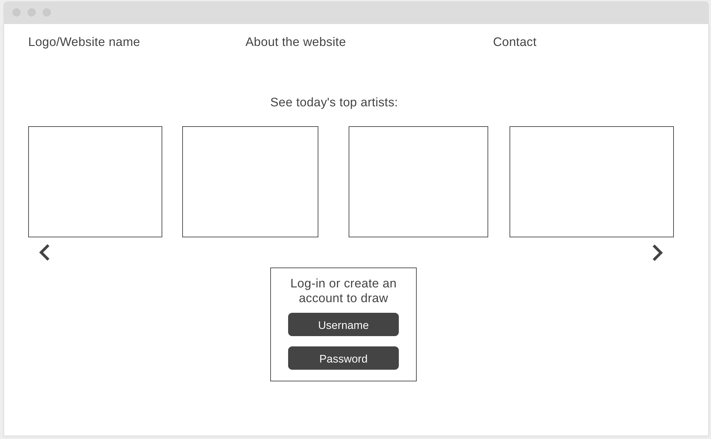
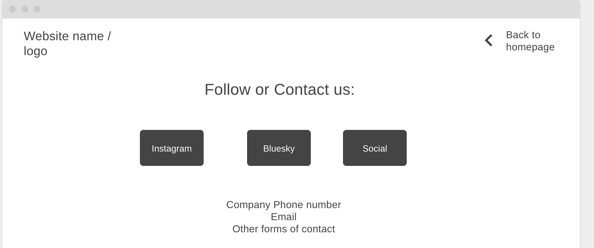
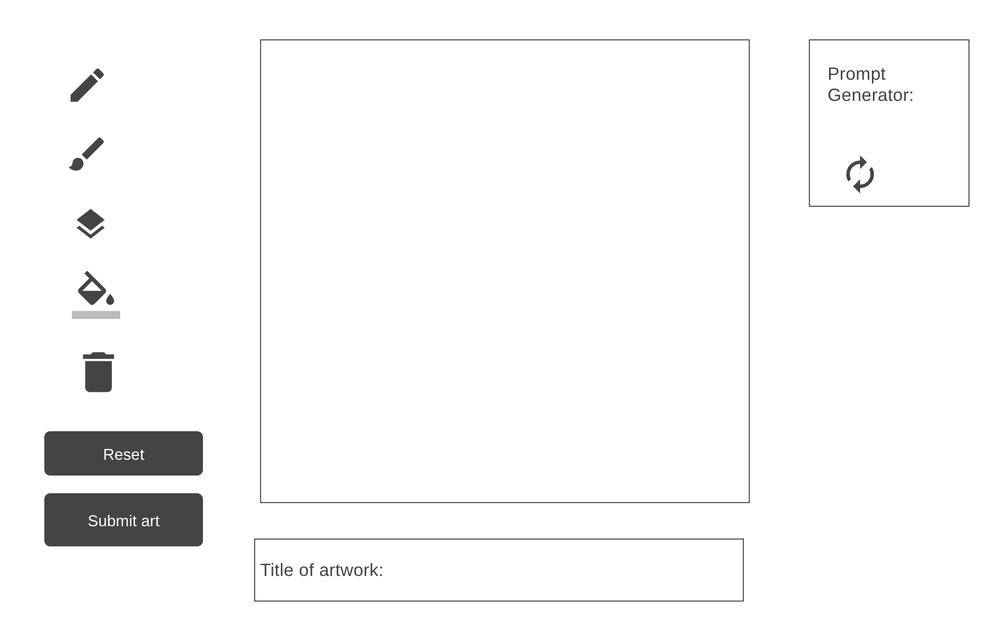

Question 1: Sketching out the wireframing can be useful in some instances. It's good for speed, to put down thoughts quickly. It's also very flexible. Easily to brainstorm without the constrictions of a website. However, sketching is difficult to duplicate for professional projects. It's also difficult for multiple people to work on it at the same time.
Answers to question 2: I think multiple types of wireframes would work well with my project. Perhaps I'd start with a sketch to simplfy it. I prefer when my ideas have less constraints to start off. Then I would transfer this wireframe to either a paper cut out, or even a digital wireframing tool.
Image of wireframe homepage
Image of wireframe contact page
Image of wireframe draw page